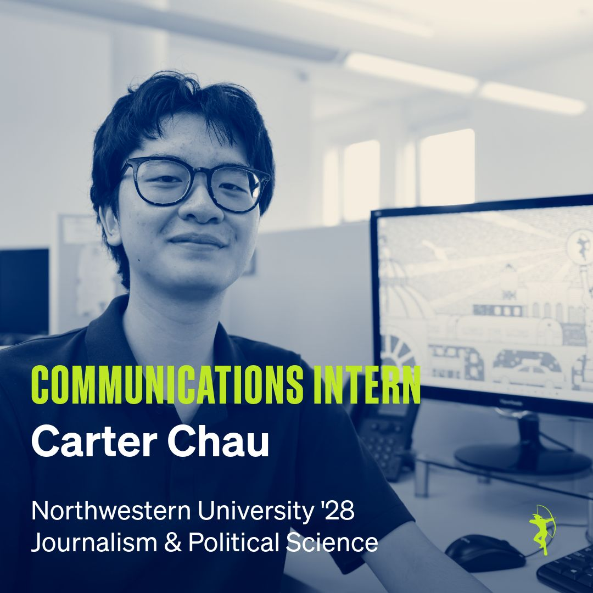
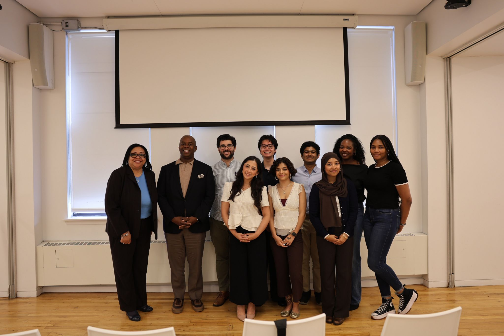
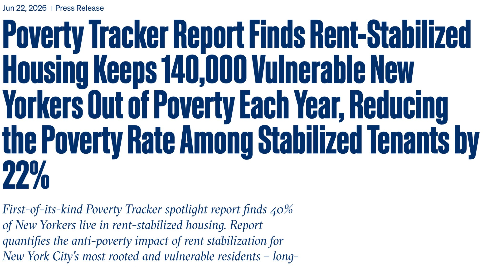
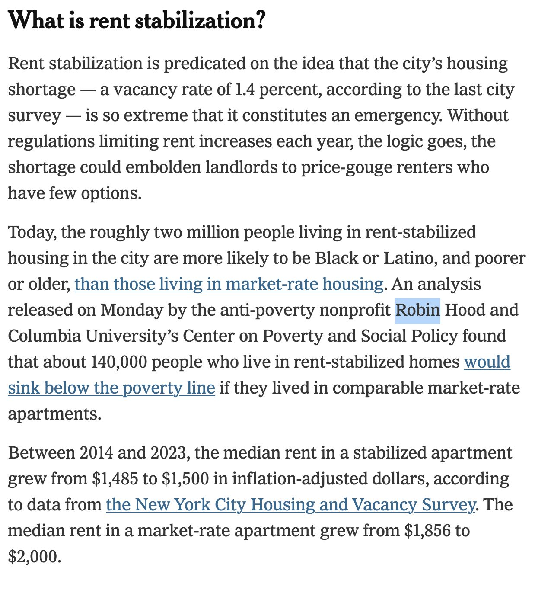

Robin Hood Foundation
Communications · Summer 2026
During my internship at Robin Hood, I supported communications efforts focused on fighting poverty in New York City. My work included drafting and editing press materials, social media messaging, event photography and media outreach.


Making research accessible
I contributed to drafting and refining the editorial voice of Robin Hood's press release about the Poverty Tracker's findings on rent-stabilized housing.

June 22, 2026 · Press release Read the original ↗Stories from inside the organization
Selected Robin Hood LinkedIn posts featuring the internship cohort and a Good Company gathering. I contributed photography and messaging to these communications.

Meet the summer interns ↗
Intern cohort spotlight and digital storytelling.

Good Company gathering ↗
Photography and messaging for a nonprofit leadership gathering.
Additional social coverage: Poverty Tracker and rent stabilization ↗
In the news
Selected independently reported news coverage related to Robin Hood's policy and communications work. These articles were written by journalists at their respective outlets, not by me.